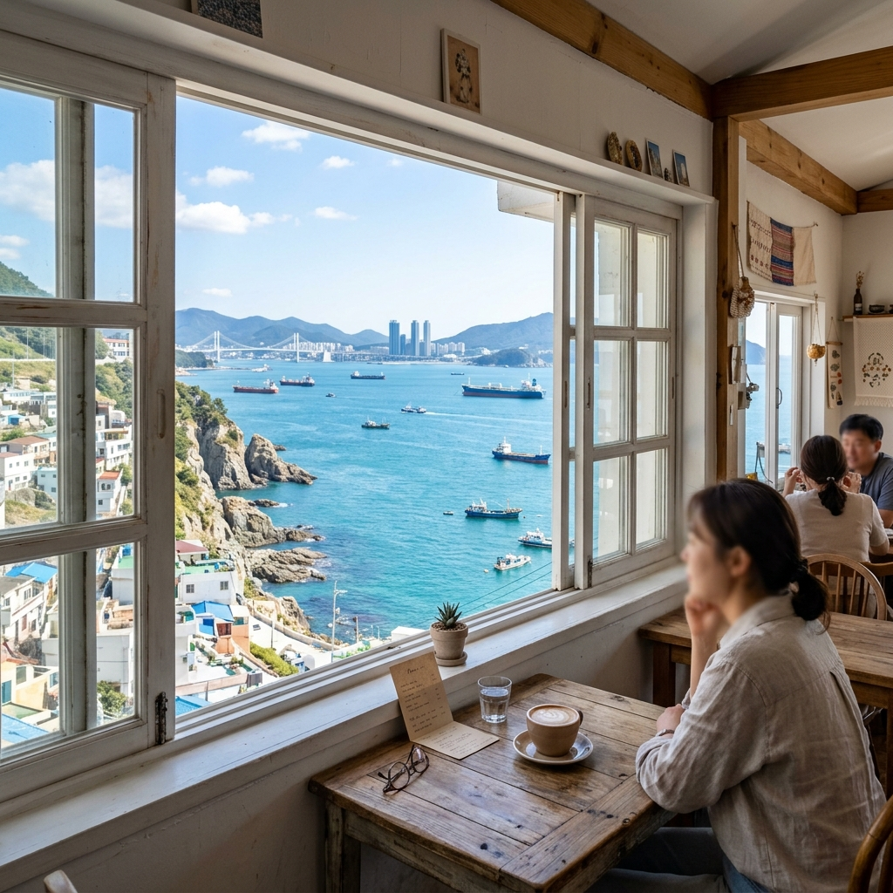
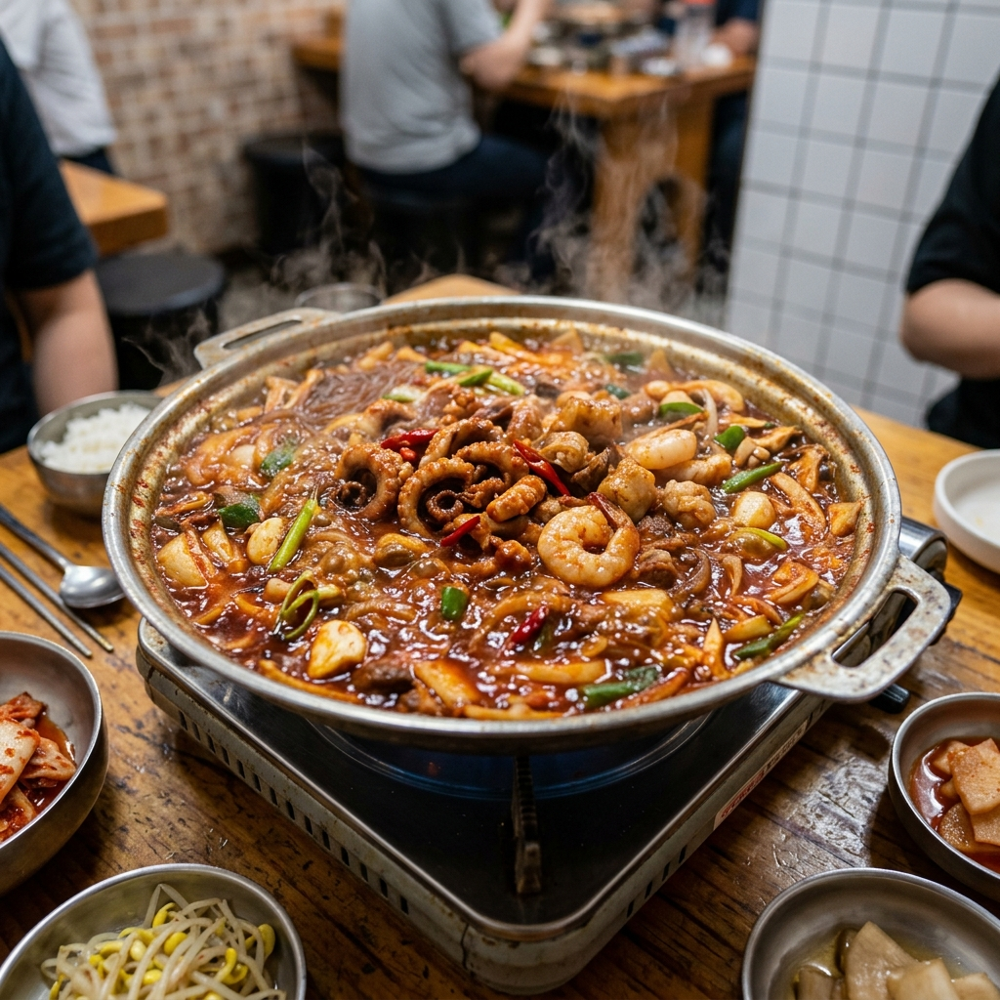

🌊 白淺灘文化村：海邊的白色小村落
09:30 搭計程車前往影島的白淺灘文化村 地圖。這裡被叫做「韓國的聖托里尼」，白色的小房子沿著山坡蓋在海邊，配上蔚藍的海跟天空，怎麼拍都像明信片。

沿著海岸步道慢慢走，每個轉角都會讓人忍不住停下來拍照。長輩如果不想走太多路，我們幫大家找一間可以直接坐著看海的咖啡廳，點杯咖啡或果汁，吹著海風放空，這可能是整趟旅行最 chill 的一段時光了 🍃
🐟 南浦洞：逛街吃飯兩不誤
12:30 到了南浦洞商圈 商圈地圖，午餐吃烤魚定食或海鮮。老樣子，我們會幫長輩跟小孩點清甜的原味湯底那一邊，想吃辣的大人們就自己點個過癮的紅湯版本。
下午就在光復路商圈閒晃，或者躲進樂天百貨（光復店） 百貨地圖 吹冷氣逛街，五月的釜山下午有時候會蠻熱的，百貨裡面最舒服。
✨ 逛街逛膩了？那就上山看風景吧
商圈裡面有免費的露天手扶梯，可以直接搭到龍頭山公園（釜山塔） 公園地圖。完全不用爬樓梯，對膝蓋零負擔，但站上去之後可以看到整個釜山港的全景，很值得繞過去看一眼 👀
🍤 晚餐重頭戲：落烤蝦！
18:00 晚餐是釜山超有名的「落烤蝦」（其實就是辣炒章魚＋大腸＋蝦子的超級鍋物） 落烤蝦地圖。

紅通通的辣醬在鍋裡冒著泡泡，那個香氣真的是…光聞就流口水 🤤 但不用擔心，我們會同時開兩桌：嗜辣三人組盡管享受招牌重辣鍋，長輩跟女兒那邊準備好了一鍋溫和好喝的大骨白湯鍋（或者女兒想吃炸豬排也完全OK），保證每個人都吃得開心！